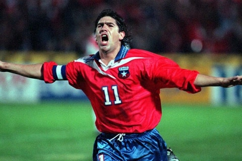
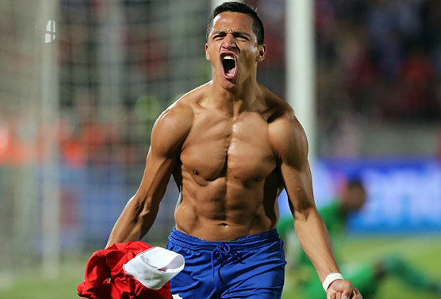
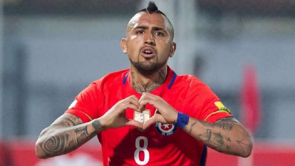
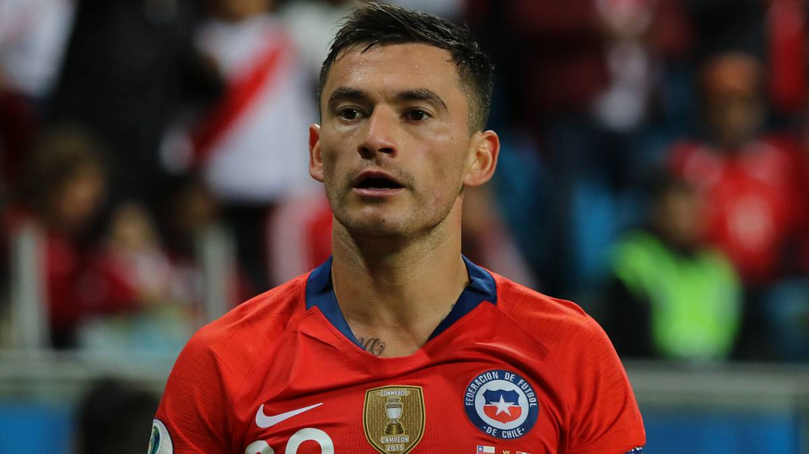
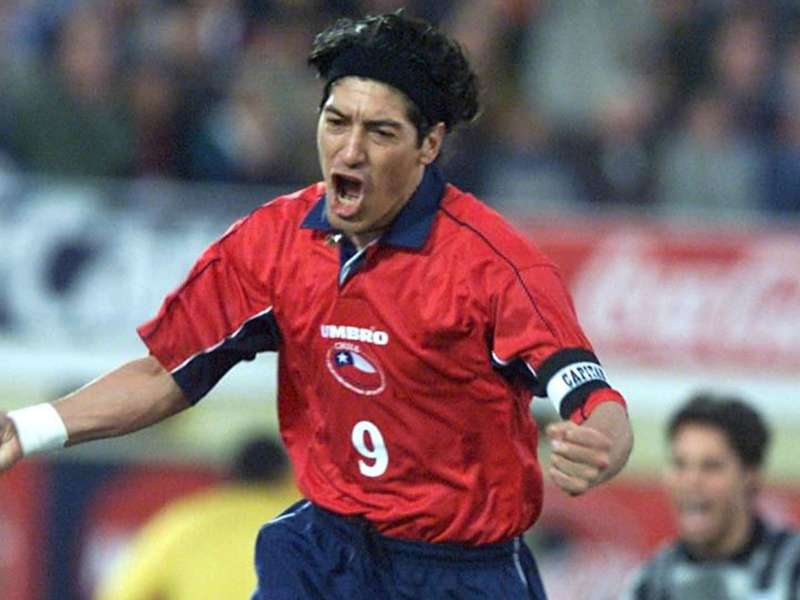

Lo que hace a la roja un equipo querido son sus jugadores, los fanáticos en la mayoría de los casos tienen un jugador favorito ya sea por cariño, su habilidad frente al balón, etc.
Marcelo Salas

Marcelo salas fue un jugador de los años 90 y 2000, Marcelo salas fue ganando fans debido a su habilidad frente a el balón,
incluso fue considerado "mejor delantero de la historia de Chile".
Alexis sanches

Alexis Sánchez es un jugador chileno el cual se a ganado el corazón de miles de chilenos, tanto como su desempeño como jugador, como su carisma que llego a tener una película.
Arturo vidal

Arturo Vidal se a convertido en el futbolista chileno con mas títulos en la historia, creándose una fama al rededor de este futbolista, siendo este un futbolista profesional, llego a estar en la llamada generación dorada de la selección chilena donde se ganaron 2 copas américa.
Charles aranguiz

Charles Aránguiz mas conocido como "el príncipe" se gano el cariño de la gente en parte por su habilidad y el cariño que le tienen, y no solo es querido en chile sino que en todas partes del mundo, ya que fue considerado el mejor jugador del Bayer Leverkusen.
Iván Zamorano

Iván Zamorano fue un jugador chileno que es el 4to goleador histórico chileno, ganando su fama en equipos como el real Madrid ganado miles de fanáticos, en habilidad destacaba Ya que se convirtió en goleador máximo en su primer equipo.